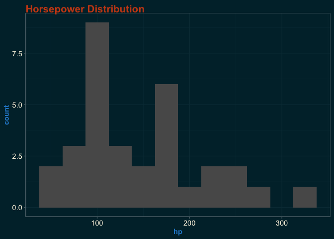
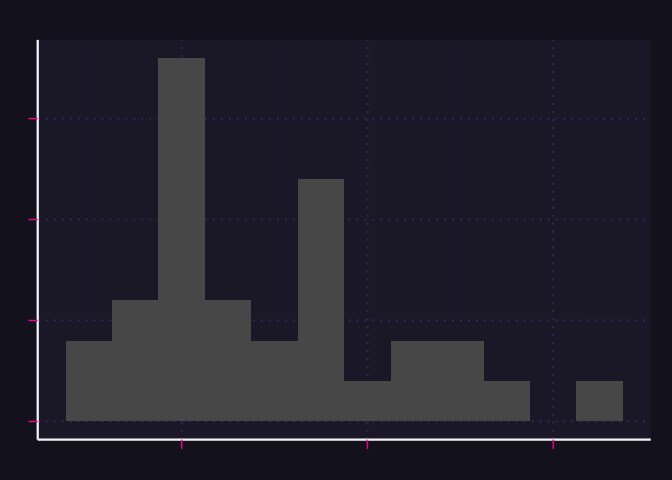
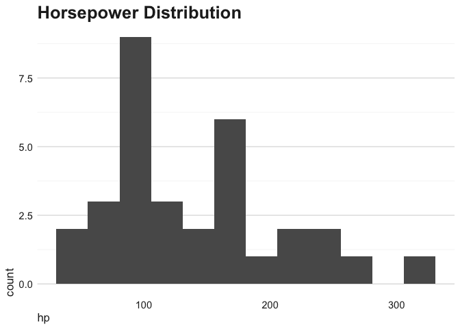
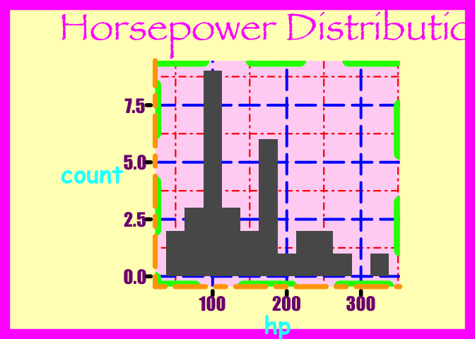

The goal of ggthemeAI is to make it quicker to prototype highly-custom ‘ggplot2’ themes. It uses LLMs to rapidly generate theme functions according to the visual characteristics you describe.
Imagine some theme_x() function that might look cool. Now, if you can describe it in natural language, you can try a version of it instantly!
It uses ellmer as a chat interface to various LLM providers.
Note the package is still in development, so the API may change prior to a CRAN release.
Features
-
make_ai_theme(): Create a ggplot2 theme function from a description of the desired theme - Choose your level of safety: Get a theme function directly, or get an expression that you can inspect before evaluating
- function blacklisting:
make_ai_theme()will check the generated theme for dangerous function calls (likeunlink()) and warn you if it finds any (to be combined with other safety layers/practices) - Image input: optionally use ellmer image content functions to add images to the chat
- ggplot2-focused system prompts for ellmer chats
-
tool_list_fonts(): register with your ellmer chats withchat$register_tool()so your LLM can see the fonts available in your R session, and use them in themes
Installation
You can install the development version of ggthemeAI like so:
pak::pak('arkraieski/ggthemeAI')Example and basic usage
This example shows you how to get started creating themes with ggthemeAI. The make_ai_theme() function takes a chat object and a description of the theme you want, and returns code for a ggplot2 theme function.
library(ggplot2)
library(ellmer)
library(ggthemeAI)
chat <- chat_openai() # can customize system prompt here if desired
#> Using model = "gpt-4.1".
theme_expression <- make_ai_theme(chat,
'solarized dark take on the default ggplot2 theme',
return_type = "expression")
#> function(base_size = 11, base_family = "") {
#> # Solarized Dark core palette
#> bg <- "#002b36" # base03
#> fg <- "#839496" # base0
#> grid <- "#073642" # base02
#> axis <- "#586e75" # base01
#> title_col <- "#93a1a1" # base1
#> tick_col <- "#839496" # base0
#> panel_bg <- "#003541" # slightly lighter than bg for panel
#> strip_bg <- "#073642" # base02
#> accent <- "#b58900" # yellow for emphasis
#>
#> half_line <- base_size / 2
#>
#> theme(
#> # Base settings
#> line = element_line(colour = fg, linewidth = 0.5, lineend = "round"),
#> rect = element_rect(fill = bg, colour = NA),
#> text = element_text(family = base_family, face = "plain",
#> colour = fg, size = base_size, lineheight = 0.9, hjust
#> = 0.5, vjust = 0.5),
#> # Plot background
#> plot.background = element_rect(fill = bg, colour = NA),
#> panel.background = element_rect(fill = panel_bg, colour = NA),
#> # Panel grid
#> panel.grid.major = element_line(colour = grid, linewidth = 0.65),
#> panel.grid.minor = element_line(colour = grid, linewidth = 0.3),
#> # Panel border
#> panel.border = element_blank(), # Leave border off for minimalist look
#> # Axes
#> axis.ticks = element_line(colour = tick_col, linewidth = 0.4),
#> axis.ticks.length = unit(half_line / 2, "pt"),
#> axis.line = element_line(linewidth = 0.7, colour = axis),
#> axis.text = element_text(size = rel(0.85), colour = fg, family =
#> base_family),
#> axis.title = element_text(size = rel(1.1), colour = fg, family =
#> base_family),
#> axis.title.x = element_text(margin = margin(t = half_line / 2), vjust = 1),
#> axis.title.y = element_text(margin = margin(r = half_line / 2), angle = 90,
#> vjust = 1),
#> # Strip (facet) settings
#> strip.background = element_rect(fill = strip_bg, colour = NA),
#> strip.text = element_text(size = rel(1.0), colour = accent, face = "bold"),
#> # Legend
#> legend.background = element_rect(fill = bg, colour = NA),
#> legend.key = element_rect(fill = panel_bg, colour = NA),
#> legend.text = element_text(colour = fg, size = rel(0.9)),
#> legend.title = element_text(colour = accent, size = rel(1.05), face =
#> "bold"),
#> legend.position = "right",
#> # Titles
#> plot.title = element_text(
#> colour = title_col, face = "bold", size = rel(1.3),
#> hjust = 0, vjust = 1, margin = margin(b = half_line)
#> ),
#> plot.subtitle = element_text(
#> colour = title_col, size = rel(1.05),
#> hjust = 0, vjust = 1, margin = margin(b = half_line / 2)
#> ),
#> plot.caption = element_text(
#> colour = axis, size = rel(0.85),
#> hjust = 1, vjust = 1, margin = margin(t = half_line / 2)
#> ),
#> plot.margin = margin(half_line, half_line, half_line, half_line),
#> # Remove minor tick lines for clarity on dark backgrounds
#> axis.ticks.y.right = element_blank(),
#> axis.ticks.x.top = element_blank(),
#> # Make sure there is sufficient contrast and clarity
#> complete = TRUE
#> )
#> }
# in an interactive session, you can/should now inspect the content of theme code
# before proceeding
# theme_expression
# eval to create the final theme function
theme_solarized <- eval(theme_expression)
ggplot(mtcars, aes(x = hp)) +
geom_histogram(binwidth = 25) +
labs(title = "Horsepower Distribution") +
theme_solarized() # LLM wrote the code for this function
If you want to skip the step of evaluating the expression, you can use return_type = "function" (or just omit that argument) to get a function directly. However, this is fundamentally kind of dangerous because you are executing LLM-generated code. However, in a low-risk environment (ideally disposable/isolated like Docker) where all input is trusted, you might be OK with that. (make_ai_theme() does call find_dangerous_calls() but there are ways function calls can be constructed/obfuscated to get around that)
It should be noted that make_ai_theme() is not a pure function. This is by design. In addition to return the new theme, the state of the R6 Chat is updated. You can then chat with the LLM to have it explain the theme or iterate on it.
There’s also a check_theme() function that checks if a function is actually a ggplot2 theme. However, this function only works by actually executing the theme, so it shouldn’t be used as a security measure. I intend to add some contrast checking to that function if it remains in the package.
System prompts and tools
ggthemeAI also provides a couple system prompts to help give the LLM you’re working with extra extra knowledge that may be helpful generating themes for ggplot2. ggplot2_doc_prompt() provides a prompt that includes the content of the ggplot2 documentation for themes and elements, and ggplot2_news_prompt() provides a prompt that includes the news entries for the current major version of ggplot2 (using the version of the news on your system). Both of these can help the LLM avoid using deprecated/imagined features, and help it understand the ggplot2 theme system better. However, they both will cost extra money, so try to keep chats short.
You can also use the tool_list_fonts() function to register a tool with your chat that lists the fonts available in your R session. This can be useful for LLMs to know what fonts are available when generating themes.
So, to set up an ellmer chat that is ‘supercharged’ (ugh, sorry) for ggplot2 themes, you can do something like this:
chat <- chat_openai(system_prompt = ggplot2_doc_prompt())
chat$register_tool(tool_list_fonts()) # now LLM can call the function this wrapsUse cases
- Rapid design and prototyping of highly custom themes for stylized infographics
- Trying out a bunch of drastically different looks quickly
- Starting a custom theme without starting from scratch
- Iterating on themes conversationally
- Learning ggplot2 and improving skills: see working examples of extensively-customized themes and then have the LLM explain it
- Accessibility use cases: Assistance designing/modifying themes that are accessible to users with low-vision, colorblindness, etc.
Warnings/Disclaimers
It’s not guaranteed that the themes produced by this package will:
- Avoid using deprecated ggplot2 features
- Adhere to “best-practices” in design, accessibility, etc.
- Not do nasty things like calling
unlink()(though validating the safety of generated functions is a development priority)
Also, it’s worth thinking about how custom fonts (and other design choices like that) could enhance your themes, instead of just always using the LLM output and never trying to do anything more interesting.
Lastly, for use in Shiny apps, you need to be careful about security. Using a hardened system prompt is a good idea if you don’t want people doing kooky things in your app. Currently, use in shiny in production is not recommended, but might be fine for internal apps or prototypes if other precautions are taken to keep things low risk.
Bonus examples
theme_cyberpunk <- make_ai_theme(chat,
'cyberpunk neon with Japanese influence')
#> function(base_size = 12, base_family = "") {
#> # Core neon cyberpunk palette + Japanese influence
#> bg_dark <- "#16151a" # Near-black deep violet
#> fg_light <- "#ececec" # Off-white for highly readable text
#> neon_pink <- "#ff46c8" # Neon magenta
#> neon_cyan <- "#00fff5"
#> neon_yellow <- "#fff700"
#> accent_red <- "#ff5959" # Neon red, Japan rising sun accent
#> grid_col <- "#2c2a34" # Subtle grid lines
#> axis_col <- neon_cyan # Neon cyan for key lines
#> title_col <- neon_pink # For titles/headings
#> subtitle_col <- neon_cyan
#> strip_bg <- "#22202d" # Slightly lighter than bg
#> legend_bg <- "#1b1923"
#> panel_border <- neon_yellow
#> half_line <- base_size / 2
#>
#> theme(
#> # Base
#> line = element_line(colour = fg_light, linewidth = 0.6, lineend = "round"),
#> rect = element_rect(fill = bg_dark, colour = NA),
#> text = element_text(family = base_family, colour = fg_light, size =
#> base_size),
#> # Plot background
#> plot.background = element_rect(fill = bg_dark, colour = NA),
#> panel.background = element_rect(fill = bg_dark, colour = NA),
#> # Neon accent panel border
#> panel.border = element_rect(colour = panel_border, fill = NA, linewidth =
#> 1.3),
#> # Grid lines (faint, not to overpower neon lines)
#> panel.grid.major = element_line(colour = grid_col, linewidth = 0.45),
#> panel.grid.minor = element_line(colour = grid_col, linewidth = 0.19),
#> # Axes: Neon cyan lines and ticks
#> axis.line = element_line(colour = axis_col, linewidth = 1.1),
#> axis.ticks = element_line(colour = neon_yellow, linewidth = 0.7),
#> axis.ticks.length = unit(half_line / 2, "pt"),
#> axis.text = element_text(colour = fg_light, family = base_family, size =
#> rel(1)),
#> axis.title = element_text(colour = neon_cyan, family = base_family, size =
#> rel(1.18), face = "bold"),
#> axis.title.x = element_text(margin = margin(t = half_line / 2), vjust = 1),
#> axis.title.y = element_text(margin = margin(r = half_line / 2), angle = 90,
#> vjust = 1),
#> # Titles: Neon pink and cyan, inspired by Japanese vaporwave
#> plot.title = element_text(
#> colour = title_col, face = "bold", family = base_family, size = rel(1.7),
#> hjust = 0, margin = margin(b = half_line * 0.7)
#> ),
#> plot.subtitle = element_text(
#> colour = subtitle_col, family = base_family, size = rel(1.07),
#> hjust = 0, margin = margin(b = half_line * 0.5)
#> ),
#> plot.caption = element_text(
#> colour = fg_light, family = base_family, size = rel(0.78),
#> hjust = 1, margin = margin(t = half_line * 0.7)
#> ),
#> plot.margin = margin(half_line, half_line, half_line, half_line),
#> # Legend - subtle background, neon title
#> legend.background = element_rect(fill = legend_bg, colour = NA),
#> legend.key = element_rect(fill = bg_dark, colour = NA),
#> legend.text = element_text(colour = fg_light, size = rel(0.94)),
#> legend.title = element_text(colour = neon_pink, face = "bold", size =
#> rel(1.07)),
#> legend.position = "right",
#> # Faceting strips - subtle, neon border, Japanese pop touch with red txt
#> strip.background = element_rect(fill = strip_bg, colour = neon_cyan,
#> linewidth = 1.2),
#> strip.text = element_text(
#> colour = accent_red, face = "bold", family = base_family, size =
#> rel(1.12)
#> ),
#> # No shadows or blurs (hard to achieve in ggplot2), but use neon pops on
#> key lines/text
#> # Remove minor axis ticks for clarity
#> axis.ticks.y.right = element_blank(),
#> axis.ticks.x.top = element_blank(),
#> # Remove classic box for a floating neon panel feel
#> panel.ontop = FALSE,
#> # Complete theme specification
#> complete = TRUE
#> )
#> }
p <- ggplot(mtcars, aes(x = hp)) +
geom_histogram(binwidth = 25) +
labs(title = "Horsepower Distribution")
p + theme_cyberpunk()
theme_swiss <- make_ai_theme(chat,
'minimalist Swiss design')
#> function(base_size = 12, base_family = "") {
#> # Minimalist Swiss Design palette and element choices
#> bg_white <- "#FFFFFF" # clean white bg
#> fg_black <- "#222222" # very dark gray for high contrast text
#> grid_major <- "#E0E0E0" # light gray grid lines
#> grid_minor <- "#F5F5F5" # very faint for minor grid
#> accent_red <- "#E30613" # Swiss red for subtle emphasis
#> half_line <- base_size / 2
#>
#> theme(
#> # Basic element setup, lean sans family recommended for Swiss style
#> line = element_line(colour = fg_black, linewidth = 0.5, lineend =
#> "square"),
#> rect = element_rect(fill = bg_white, colour = NA),
#> text = element_text(
#> family = base_family, face = "plain",
#> colour = fg_black, size = base_size, lineheight = 1, hjust = 0
#> ),
#>
#> # Minimalist plot and panel backgrounds
#> plot.background = element_rect(fill = bg_white, colour = NA),
#> panel.background = element_rect(fill = bg_white, colour = NA),
#>
#> # Use only horizontal grid lines for visual rhythm, drop minor details
#> panel.grid.major.x = element_blank(),
#> panel.grid.major.y = element_line(colour = grid_major, linewidth = 0.5),
#> panel.grid.minor.x = element_blank(),
#> panel.grid.minor.y = element_line(colour = grid_minor, linewidth = 0.3),
#>
#> # No panel borders or axes lines for ultra-clean page
#> panel.border = element_blank(),
#> axis.line = element_blank(),
#>
#> # Axis ticks: simple, minimal
#> axis.ticks = element_blank(),
#> axis.text = element_text(size = rel(0.92), colour = fg_black,
#> family = base_family),
#> axis.title = element_text(size = rel(1.05), colour = fg_black,
#> family = base_family, face = "plain"),
#> axis.title.x = element_text(margin = margin(t = half_line / 2), vjust
#> = 1),
#> axis.title.y = element_text(margin = margin(r = half_line / 2), angle
#> = 90, vjust = 1),
#>
#> # Swiss/International Style headline hierarchy
#> plot.title = element_text(
#> family = base_family, face = "bold", colour = fg_black,
#> size = rel(1.6), hjust = 0, vjust = 1, margin = margin(b = half_line *
#> 0.5)
#> ),
#> plot.subtitle = element_text(
#> family = base_family, face = "plain", colour = fg_black,
#> size = rel(1.2), hjust = 0, vjust = 1, margin = margin(b = half_line *
#> 0.3)
#> ),
#> plot.caption = element_text(
#> family = base_family, face = "plain", colour = grid_major,
#> size = rel(0.85), hjust = 0, margin = margin(t = half_line * 0.6)
#> ),
#>
#> # Facet: subtle red underline, all-caps, to echo Swiss touch
#> strip.background = element_blank(),
#> strip.text = element_text(
#> family = base_family, face = "bold", colour = fg_black, size = rel(1.02),
#> margin = margin(b = 2)
#> ),
#> strip.placement = "outside",
#> strip.text.y = element_text(angle = 0, vjust = 1),
#>
#> # Red accent for legend title and/or strip underline (Swiss design nod)
#> legend.background = element_rect(fill = bg_white, colour = NA),
#> legend.key = element_rect(fill = bg_white, colour = NA),
#> legend.title = element_text(
#> colour = accent_red, face = "bold", size = rel(1), family = base_family
#> ),
#> legend.text = element_text(
#> colour = fg_black, size = rel(0.95), family = base_family
#> ),
#> legend.position = "bottom",
#> legend.direction = "horizontal",
#>
#> # Subtle margins for white space discipline
#> plot.margin = margin(half_line, half_line, half_line, half_line),
#>
#> # Complete definition
#> complete = TRUE
#> )
#> }
p + theme_swiss()
theme_chartjunk <- make_ai_theme(chat,
'add some annoying chartjunk')
#> function(base_size = 12, base_family = "") {
#> # Chartjunk color palette and parameters
#> bg_color <- "#fcfaf2" # slightly yellow paper background
#> grid_major <- "#e6e0cf"
#> grid_minor <- "#f2eddc"
#> axis_color <- "#9B4DCA" # garish, clashing purple
#> tick_color <- "#ED2939" # eye-popping red ticks
#> fg_text <- "#14396D" # heavy blue for text
#> title_color <- "#ff9900" # neon orange titles
#> subtitle_col <- "#108144" # green for subtitle
#> legend_bg <- "#e5e4e2" # off-gray legend bg
#> strip_bg1 <- "#fff301" # neon yellow panel
#> strip_bg2 <- "#FF5F1F" # bright orange strip
#> border_col <- "#f5115f" # hot pink border
#> watermark_col <- "#00b9eb55" # semi-transparent neon blue
#> spiral_col <- "#F400A1" # magenta for embellishments
#> half_line <- base_size / 2
#>
#> theme(
#> # Garish, heavy lines against muted paper bg
#> line = element_line(colour = axis_color, linewidth = 1, lineend = "butt"),
#> rect = element_rect(fill = bg_color, colour = border_col, linewidth = 2),
#> text = element_text(
#> family = base_family, face = "italic",
#> colour = fg_text, size = base_size, lineheight = 0.88, hjust = 0.5, vjust
#> = 0.5
#> ),
#>
#> # Over-the-top backgrounds everywhere
#> plot.background = element_rect(fill = bg_color, colour = border_col,
#> linewidth = 4),
#> panel.background = element_rect(fill = strip_bg1, colour = strip_bg2,
#> linewidth = 3),
#>
#> # Grid lines: overbearing, clashing and offset to clash
#> panel.grid.major = element_line(colour = grid_major, linewidth = 1.2,
#> linetype = "twodash"),
#> panel.grid.minor = element_line(colour = grid_minor, linewidth = 0.85,
#> linetype = "longdash"),
#>
#> # Panel border: thick and bright
#> panel.border = element_rect(fill = NA, colour = border_col, linewidth = 3),
#>
#> # Axis lines/ticks: garish, thick, mismatched colors
#> axis.line = element_line(colour = axis_color, linewidth = 2.2, linetype =
#> "solid"),
#> axis.ticks = element_line(colour = tick_color, linewidth = 2.8, linetype =
#> "dotdash"),
#> axis.ticks.length = unit(3, "mm"),
#> axis.text = element_text(size = rel(1.3), colour = fg_text, face = "bold"),
#> axis.title = element_text(size = rel(1.4), colour = tick_color, face =
#> "bold.italic", angle = 5),
#> axis.title.x = element_text(margin = margin(t = half_line), vjust = 1.5),
#> axis.title.y = element_text(margin = margin(r = half_line), angle = 90,
#> vjust = 1.5),
#>
#> # Loud, clunky titles
#> plot.title = element_text(
#> colour = title_color, face = "bold.italic", size = rel(2.4),
#> hjust = 0.5, margin = margin(b = half_line * 0.8), angle = 8
#> ),
#> plot.subtitle = element_text(
#> colour = subtitle_col, face = "bold", size = rel(1.2),
#> hjust = 0.5, margin = margin(b = half_line * 0.8), angle = -7
#> ),
#> plot.caption = element_text(
#> colour = axis_color, size = rel(1.1),
#> hjust = 1, margin = margin(t = half_line * 2)
#> ),
#> plot.margin = margin(half_line * 2, half_line * 2, half_line * 2, half_line
#> * 2),
#>
#> # In-your-face legend
#> legend.background = element_rect(fill = legend_bg, colour = border_col,
#> linewidth = 3),
#> legend.key = element_rect(fill = strip_bg2, colour = axis_color,
#> linewidth = 1.4),
#> legend.title = element_text(
#> colour = border_col, face = "bold.italic", size = rel(1.2)
#> ),
#> legend.text = element_text(
#> colour = "#ff00ff", size = rel(1.08), face = "italic"
#> ),
#> legend.position = "top",
#>
#> # Multi-colored and bold facet strips
#> strip.background = element_rect(
#> fill = strip_bg2, colour = spiral_col, linewidth = 4, linetype =
#> "dotdash"
#> ),
#> strip.text = element_text(
#> colour = "#2E04A1", face = "bold.italic", size = rel(1.35), angle = 7
#> ),
#>
#> # "Chartjunk" embellishment: add a fake watermark (users will need to
#> ggplot2::annotation_custom for true effect)
#> plot.background.position = "left", # (not a real ggplot2 theme element; for
#> clarity only)
#> # Complete the definition
#> complete = TRUE
#> )
#> }
p + theme_chartjunk()